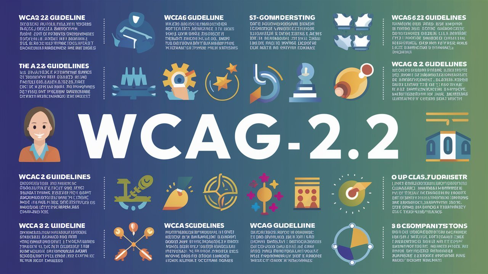
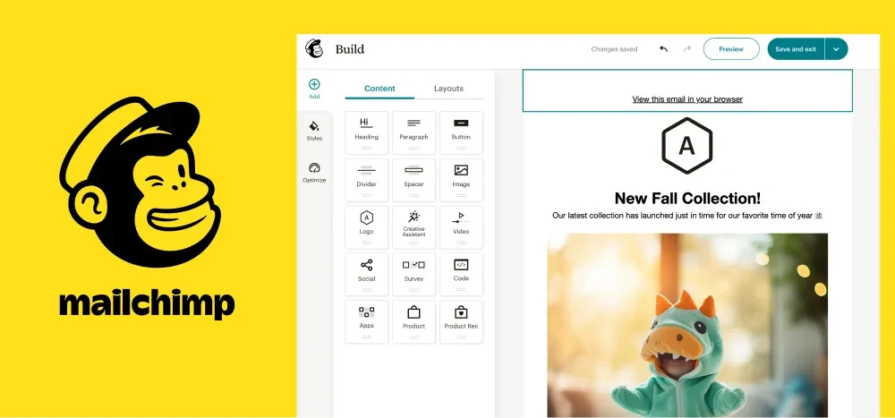

미국 진출을 준비하는 스타트업들이 자주 놓치는 부분이 바로 디자인입니다. "디자인은 글로벌하니까 그대로 써도 되겠지"라고 생각하기 쉽지만, 실제로는 그렇지 않습니다. 실리콘밸리에서 성공한 제품들을 분석해보면, 한국과는 확연히 다른 디자인 철학과 기준을 갖고 있음을 발견할 수 있습니다.
실리콘밸리 디자인의 핵심은 단순함이 아니라 '목적이 명확한 단순함'입니다. Stripe의 결제 화면을 보면 놀랍도록 간결하지만, 사용자가 결제 과정에서 느낄 수 있는 모든 불안 요소를 제거한 치밀함이 숨어있습니다. 카드 번호 입력 시 실시간으로 카드 브랜드를 인식해서 보여주고, 보안 관련 정보를 적절한 타이밍에 제공합니다. 반면 많은 한국 서비스들은 '정보를 많이 주는 것이 친절'이라고 생각해서 하나의 화면에 여러 기능을 배치하는데, 미국 사용자들은 이를 '복잡하고 신뢰하기 어려운' 서비스로 인식합니다.
실리콘밸리에서 접근성(Accessibility)은 단순히 '장애인을 배려하는 착한 일'이 아니라 더 많은 사용자에게 도달하고, 더 나은 사용 경험을 제공하는 비즈니스 전략입니다. Slack이 키보드 단축키를 강화하고 스크린 리더 호환성을 높인 이유도 여기에 있습니다. 미국 시장에서는 WCAG(Web Content Accessibility Guidelines) 준수가 기본이며, 색상만으로 정보를 구분하지 않고, 충분한 색상 대비를 유지하며, 키보드만으로도 모든 기능을 사용할 수 있어야 합니다. 이는 법적 리스크를 줄이는 동시에 더 폭넓은 사용자층에게 어필할 수 있는 방법입니다.

실리콘밸리에서는 '예쁜 디자인'보다 '효과적인 디자인'을 추구합니다. Airbnb는 숙소 사진의 밝기를 1% 올렸더니 예약률이 2.3% 증가했다는 결과를 바탕으로 사진 업로드 가이드라인을 변경했습니다. 이처럼 모든 디자인 결정에는 데이터가 뒷받침됩니다. 한국에서는 디자이너의 직감이나 트렌드에 의존하는 경우가 많지만, 미국에서는 A/B 테스트 없이는 중요한 UI 변경을 하지 않습니다. Booking.com이 "24명이 이 숙소를 보고 있습니다"라는 메시지를 추가한 것도 수십 번의 테스트를 거친 결과입니다.
미국 서비스들은 브랜드 개성을 살리면서도 기능성을 해치지 않는 절묘한 균형을 유지합니다. Mailchimp의 경우 브랜드 캐릭터인 원숭이 프레디를 활용하되, 실제 이메일 작성 화면에서는 방해가 되지 않도록 절제해서 사용합니다. 한국 서비스들은 종종 브랜딩에 치중해서 사용성을 해치거나, 반대로 기능만 강조해서 브랜드 정체성이 약해지는 경우가 많습니다.

실리콘밸리 서비스들의 텍스트는 단순해 보이지만 문화적 맥락이 깊이 반영되어 있습니다. GitHub의 "Push it to the limit" 같은 메시지는 개발자 문화를 이해하는 사용자에게는 위트있게 다가가지만, 그렇지 않은 사용자에게는 그냥 명확한 안내로 읽힙니다. 한국 서비스들이 미국 진출 시 가장 많이 실수하는 부분이 바로 이런 마이크로카피입니다. 직역된 텍스트나 한국적 표현이 남아있으면 사용자들은 즉시 '외국 서비스'라고 인식하고 신뢰도를 낮게 평가합니다.
미국 진출을 준비한다면 다음을 점검해보기 바랍니다. 각 화면에서 사용자가 해야 할 주요 액션이 명확한지, 색상 대비와 폰트 크기가 접근성 기준을 충족하는지, 모든 텍스트가 미국 사용자에게 자연스럽게 읽히는지 네이티브 스피커의 검토를 받으세요. 보다 간단히 데이터 기반의 분석을 원한다면 MS Clarity 무료플랫폼을 활용해서 실제 사용자의 행태데이터를 분석하는 것도 방법입니다.
실리콘밸리의 디자인 기준을 이해하고 적용하는 것은 미국 사용자들의 기대치를 충족하고 신뢰를 얻는 전략적 선택이며, 디자인에서부터 미국 진출의 성공이 시작된다는 점을 기억하세요.